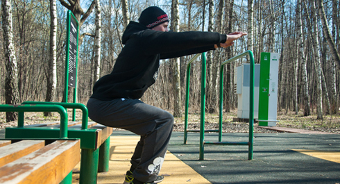
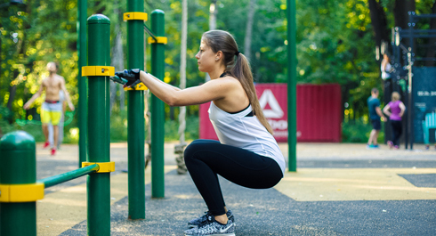

There is a common misconception that workouters just adore to pull themselves up, push-up and perform different elements on the horizontal bar and parallel bars, but few of them love to squat. Actually it's not true, and today's infopost will be specifically about this exercise!
Squats

Squats is one of the most effective muscle-building training, which involves in work multiple joints and a great number of large and small muscles of the lower body at the same time.
Classic squats give stress primarily on the quadriceps, the large gluteal muscles, the adductors, and soleus muscles. The stabilizers are the hamstrings and calf muscles. Also, the load falls on the abdominal muscles, the extensors of the back and some other small muscles of the legs and body.
***IT’S IMPORTANT***:
If you do not follow the correct technique, squats can be quite traumatic for your knee joints and lumbar! Therefore, read this post’s information highly attentively!
Basic points
1. Straining the abdominal muscles, you form a core around the waist, which protects the spine from excessive load.
2. Slowly lowering and quickly getting up, you keep the muscles in tension at all the stages of the exercise, it gives maximum benefit from squats.
3. Increasing the amplitude of squats, you increase the amount of muscles that get the load.
4. Breathe in on the lowering, and exhale on the upward movement.
Safety procedures
Squats actively involve knee and hip joints, and also ankle and lumbar. So doing squats wrong, it is easy to earn an injury. To protect yourself from this, always follow the next rules:
1. Perform the motion following the natural path.
2. Don’t arch and don’t round your back.
3. Keep your heels on the floor, especially while going down.
4. Don’t pull your knees together when lowering.
5. Keep the muscles in tension during the entire exercise.
6. Don’t make jerks and sudden movements.
7. If you experience discomfort don’t continue the exercise and try another option.
The exercise itself can be divided into 6 components:
1. Place your feet a bit wider than shoulder width.
2. Toes should be directed straight ahead or deployed a bit to the side (as it’ll be more comfortable)
3. Hands are on the waist or stretched to the sides for a balance.
4. Performing the squat, breathe in.
5. Lean on the whole foot and squat until thighs will be parallel the floor (or below). The weight should be on the whole foot ALL THE TIME!!!
6. Rising up from the squat, exhale.
Simplified versions of squats
If it’s hard at the beginning to keep the balance while performing squats and if you fall back (for most of the girls it’ll be hard at first), then try to start with preliminary exercises:
1. Put a chair behind you and squat down till you touch the chair, then go back to the starting position. So you'll work out the upper half of the movement.

2. Practice the getting up out of a deep squat.
3. Perform squats, using a supporting object.

Useful advice
Weight on the heels. During performance of the squat your weight should be equally spread across the foot with a slight offset on the heel. To verify yourself that you are doing everything right - you can lift the toes under the floor.
Knees are above toes. For proper distribution of body weight in squats and in order not to fall forward or backward, try to keep your knees right above the toes.
This is a standard requirement, which can be found in many sources. However, looking at the images of people doing squats, you notice that their knees are slightly beyond the toe. Does it mean they are doing it wrong? Not really. Rather, there is inaccuracy in the description of the technique. The point is that each person has their own ratio between the length of the limbs and other body parts. Therefore, some people may not take the knees above the toes and squat technically correct, but the others fall over backwards doing that.
So the main thing here is not to lift the heels from the floor. Moreover, it is necessary to share the weight so that the heel would have 2/3 the weight, and the toe would have 1/3, and to ensure that the center of gravity is passing through the ankle. To keep the balance, you will have to bring the knees forward and the pelvis back and down. The knees will go forward as much as it’s necessary (someone ‘s knees will get above toes, someone’s won't).
If you move the gravity center forward (removing it from the heels, and eventually lifting them from the floor), the body will begin to straighten up, and knees will go farther above the toes. The ligaments of the knee joints will be subjected to the greater and greater load, which can lead to injury.
If try by all means not to get the knees farther than toes, one will have to take the pelvis back too much and instead of the squats he’ll get a kind of Romanian deadlifts (back and hamstring will get the load but not the target-oriented quadriceps and gluteal muscles).
The feet position. The feet position is a bit wider than the shoulder width. The starting feet position in the squats is a bit more than the shoulder width, toes are slightly turned to the side. However, depending on the width between feet, the load on the adductor and abductor muscles changes. The closer the feet to each other, the more load is on muscles that are outside the legs (those which are farther from the center of the body); the farther the feet from each other, the more loaded are the muscles at the inner side of the legs (those which are closer to the center of the body). You also need to remember that the closer the feet to each other, the more parallel they should be; conversely, the farther they are, the more you should turn the toes to the sides to make the knee move correctly, when performing squats. Try different options and find the most comfortable, and we will return to this topic in the ADVANCED level.
The position of the arms. If you are just learning to do squats, then we would recommend you to stretch your arms forward while lowering down. Thus, you will create some counterweight (if you’ll take something heavy, the counterweight will be stronger). You can also do squats with a support (for example, on the back of a chair, a table, a wall), helping yourself to keep balance.
The depth of squats. You can often hear the thesis that one should squat only to the parallel, that is, until the moment when the thighs fall to a horizontal position (parallel to the floor). Some people even frighten others by the fact that if you squat lower, it is possible to injure the knees. With this issue, as with almost any, we would recommend you to learn to listen to your body. If you are not comfortable to squat below parallel, you don't need to.
Your main task in our SOTKA program — to try the information you get, analyze it and learn to understand how your body works. Only then you’ll be able to train!
We believe that all the rumors about the dangers of deep squats are greatly exaggerated. You know, the knee joint has its own natural range of motion. So, all movements within this amplitude are natural and safe. Take a look at small children, they constantly use deep squats in their life!
In addition, the deeper your squats are (within natural limits), the larger the load your muscles get. Therefore, we recommend squatting to that depth, which allows you to keep proper technique (a foot is fully on the floor, the weight is on your heels, lumbar with the natural deflection, not rounded). As soon as you feel that the technique starts to break down, then it’s not necessary to squat lower. But if you will try to squat a little lower, the flexibility and mobility of your knee and ankle joints will improve.
A few words about where all these squats to “parallel” came from. There is one interesting hypothesis. The fact that there is a kind of strength sport — powerlifting. The athletes compete on the strength during three exercises: squats, the bench press and the deadlift. In order to be able to rate their results, they’ve developed special rules. They pointed out that the depth of the squat should be at least parallel to the floor. A reasonable question appeared soon: if the rules require squatting to “parallel”, and these squats allow you to lift more weight, why to squat lower? So actually squat to parallel is just a feature of powerlifting as a sport.
By the way, saying "squat to parallel", we mean that the upper part of the thigh should be parallel to the floor and the buttocks, respectively, lower. We believe it is our duty to tell about this, because we see that people cut down the amplitude of squats quite often. Looking at the mirror they observe their buttocks and in fact their squats are about 60 degrees, which greatly reduces the efficiency s of the exercise.